Dont Just Save｜AI 内容灵感管理工具
Problem收藏很多但难以整理、复用和转化为创作任务。
Input链接、截图、文字灵感、用户手动备注。
Process外部 App 分享、内容分类、AI 摘要、标签推荐、主题聚合。
OutputAndroid MVP Demo、产品流程、原型截图、项目展示页。
Evidence
Mingqi Shu Portfolio
舒明琦 Mingqi Shu
Urban Planning × Data Analysis × AI Product Experiments
我关注如何把复杂城市数据、内容灵感、照片记录和项目材料，转化为清晰的分析、可体验的 Demo 和可传播的作品。
Work Map
我把项目放在 Data / Content 与 Research / Product 两组坐标里看：不是简单罗列成果，而是看每个作品如何从混乱输入走向可判断、可展示、可行动的输出。
Featured Case Studies
每个案例都按 Problem / Input / Process / Output / Evidence 组织，强调我如何把真实材料拆开、加工，再变成一个可被体验或验证的版本。
Evidence Shelf
这里不写长介绍，只放能被打开、被检查、被追溯的真实产出：论文、报告、看板、Demo、Prompt 工作流和视觉实验。
街景图像与预训练大模型的街道可步行性研究。
查看从出行数据到指标、图表和章节叙事的报告输出。
查看区县对比、异常识别、指标解释与交互筛选。
查看把收藏内容转化为可分类、可复用的创作灵感池。
查看乡村路线、地点卡和内容脚本生成工作台。
查看照片 GPS 与 POI 生成地图叙事和照片墙。
查看项目材料到证据台账、简历 bullet 和面试故事。
查看文创印章、古画动态化等图像与视频表达实验。
查看Practice Notes
这个作品集不是为了证明我已经很成熟，而是记录我如何把真实问题拆开、用数据和 AI 工具做出可展示的版本，并持续修正自己的判断。
Skill 01
街景图像、多模态理解、Prompt 与 LoRA
将街道品质、舒适性、可步行性这类规划判断拆解为可训练、可解释的图像理解任务，并探索 LLM/Agent 对城市材料整理和空间诊断的辅助能力。
把“舒适性”转化为层级指标、标注规则和模型可识别的视觉特征。
完成训练集标注、LoRA 训练、Prompt 设计与模型输出比较。
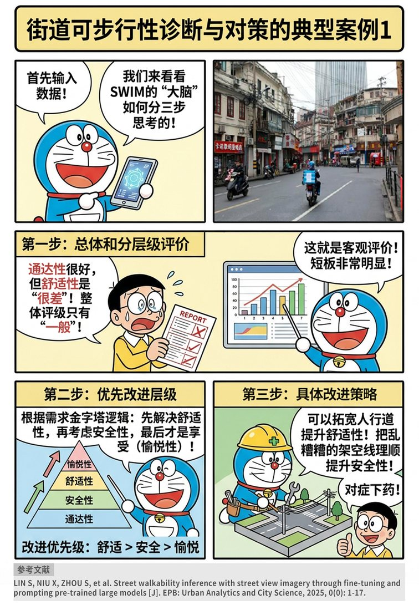
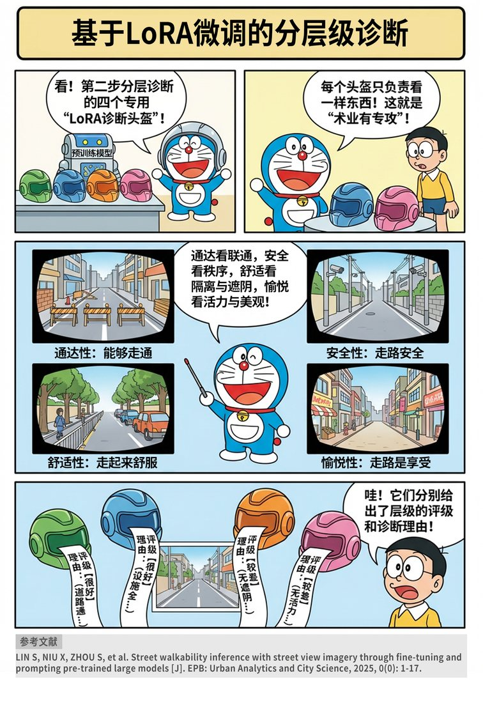
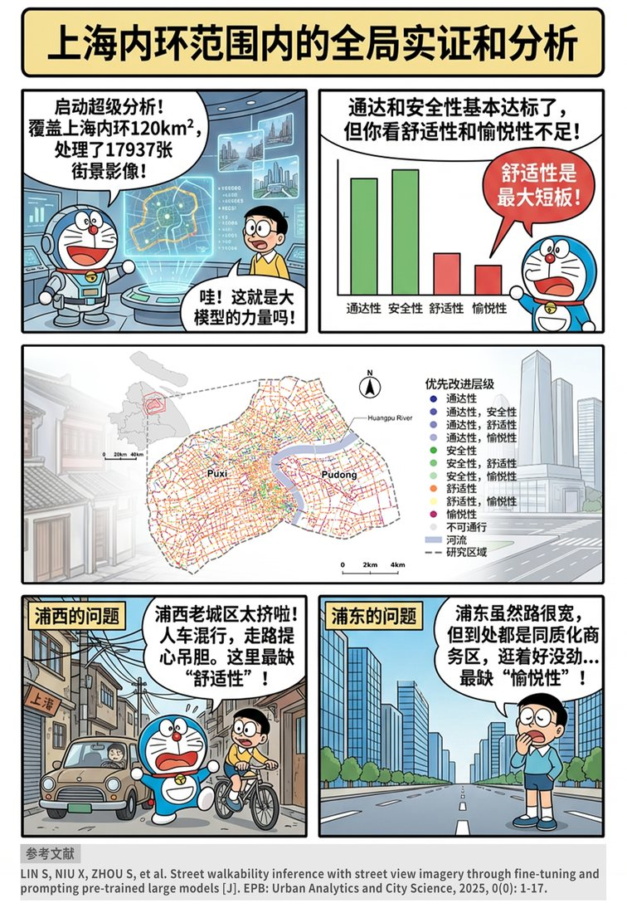
Skill 02
多源数据、指标体系与空间解释
围绕跨城通勤、设施选址、商业区位和产业协同等问题，处理多源城市数据，建立可比较的指标体系，并通过地图和图表把结论讲清楚。
负责数据处理、第五章写作，参与城市样本整理、指标设计与图表表达。
整合人口、道路、服务半径和风险约束，输出适宜性分区与候选点比较。
本人负责: 数据处理 / 第五章写作 / 指标与图表整理。点击浏览 PDF 详情。
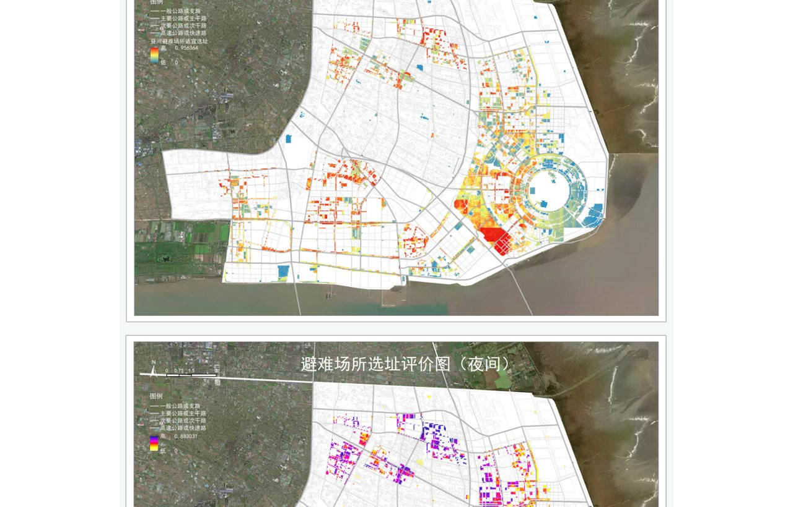
ArcGIS、服务半径、风险约束、空间适宜性评价。点击浏览全部图片。
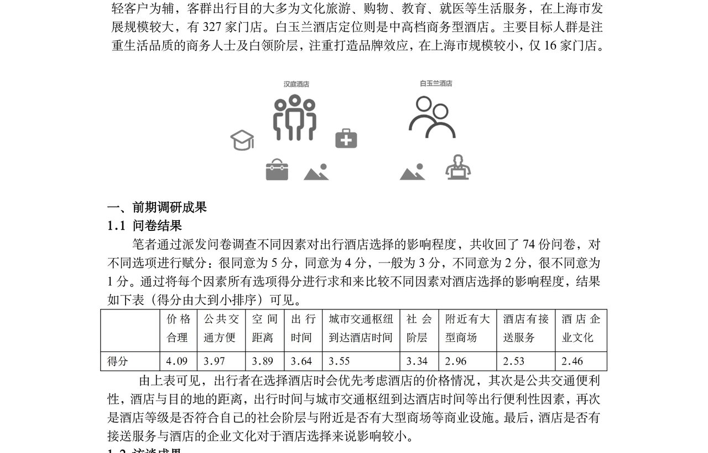
交通、商业、景点、地租与竞品变量拆解。点击浏览全部图片。
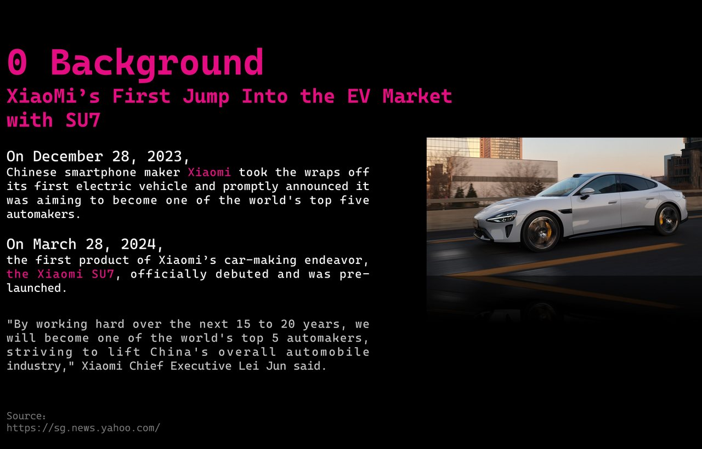
产业链数据、区域区位优势与协同效应可视化。点击浏览全部图片。
Skill 03
城市设计、总体规划与乡村韧性
保留城乡规划训练中的“调研-问题-策略-空间-实施”链条，把数据分析和 AI 结果落到真实空间、规划语言和可讨论的方案表达中。
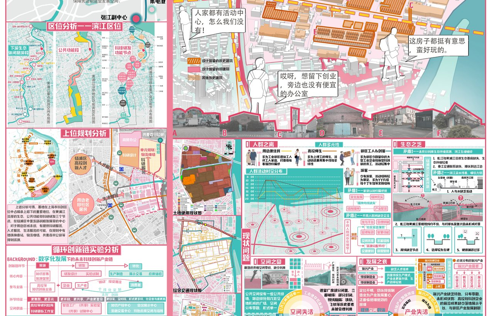
城市更新策略、总平面、效果图与策略分析图。点击浏览全部图片。
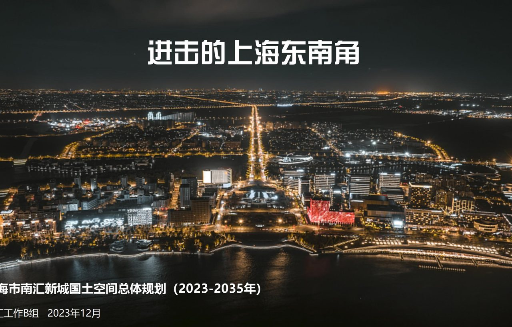
交通体系、综合防灾、发展战略。点击浏览全部图片。
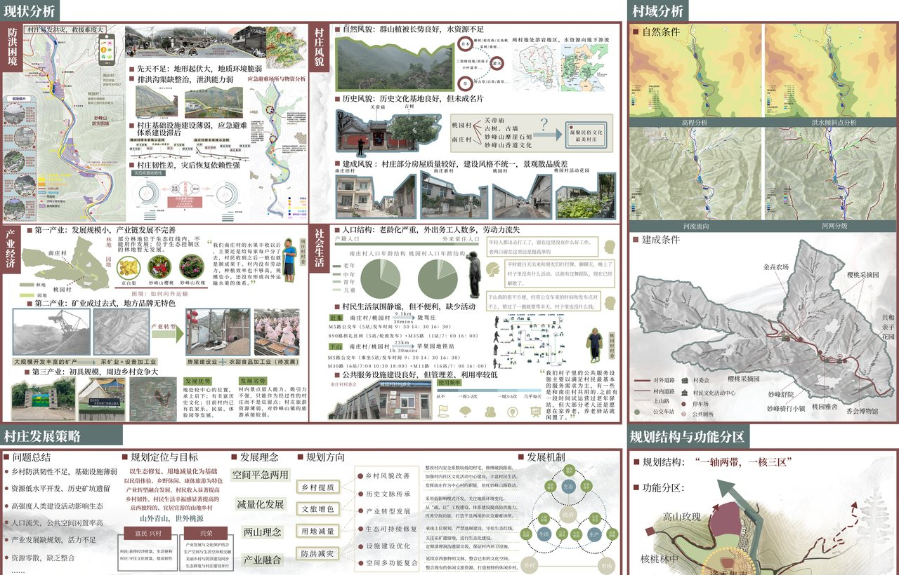
平急两用、水文雨洪、村庄发展模式。点击浏览全部图片。
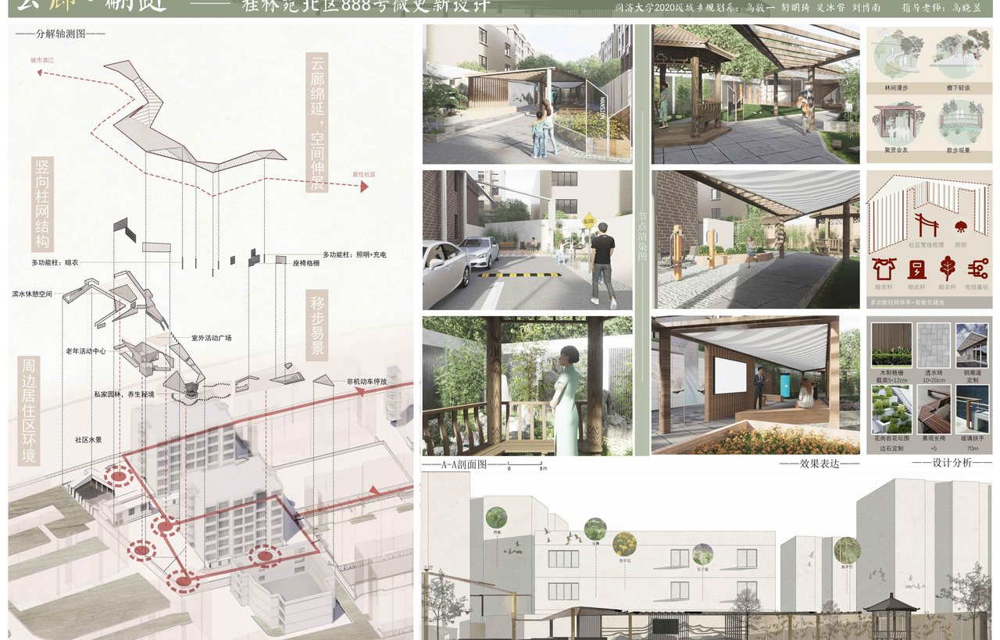
慢行体验、公共活动与街区界面修复。点击浏览全部图片。
Skill 04
报告、展板、网页与研究叙事
AI4Cities 的成果需要被快速理解。我可以把技术结果转译成论文图表、年度报告、竞赛展板和网页展示，兼顾学术解释、规划语境与公众可读性。
组织章节结构、图表逻辑、地图表达和结论文字。
规划图纸、研究海报、展板排版和最终汇报表达。
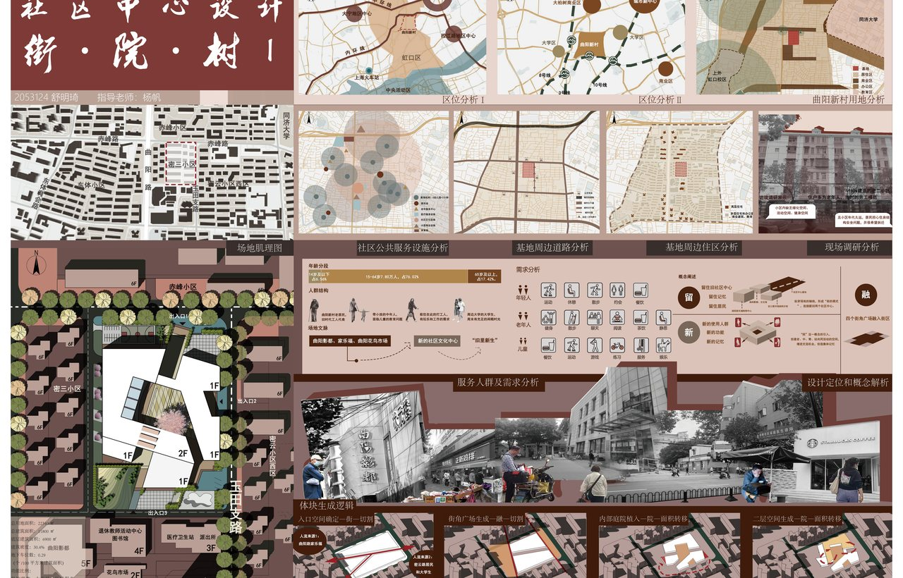
空间组织、图面表达、场景化呈现。点击浏览全部图片。
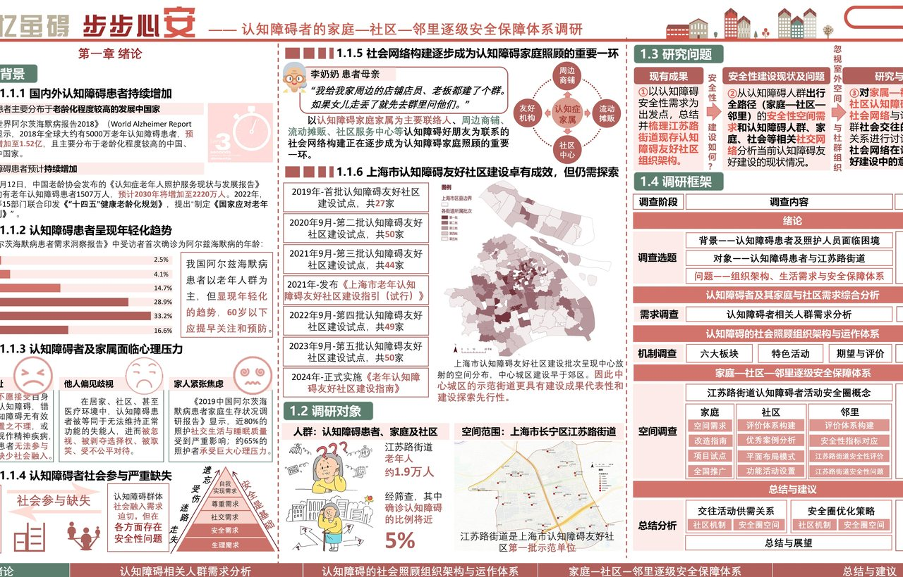
调研材料组织与报告视觉叙事。点击浏览全部图片。
本人负责: 人工采集数据 / 禁骑政策影响分析 / 居民骑行环境偏好讨论。点击浏览 PDF 详情。
Research Outputs
研究型成果单独整理，突出论文/报告主题和本人负责的工作。点击可打开本地 PDF。
跨城通勤作为都市圈形成与演进的重要表征，为区域协同发展与空间规划提供观察视角。